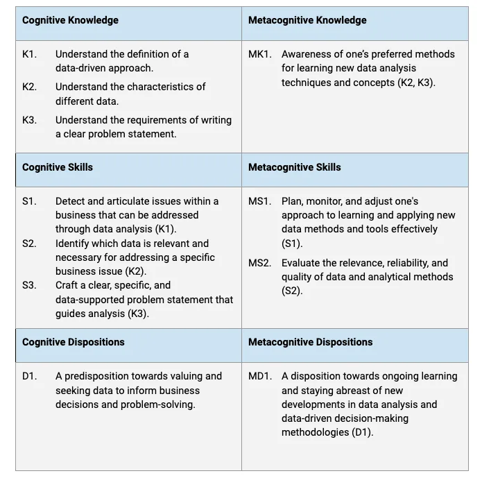

Project Overview
Our Client is Honda Research Institute USA. I worked as the curriculum designer to create an interactive data science training for managers and practitioners to upskill and reskill. My main contribution includes identifying knowledge gaps, designing instruction, and employing gamification elements.
Check the Articulate courses here:
For Managers:
For Practitioners:
Problem
Data science training is a challenge for both managers and practitioners at HRI, and we identified 3 problems.
- First, Resource Navigation. Employees often find themselves overwhelmed by the significant volume of resources available.
- Second, Lack of Motivation. There is a widespread inability to recognize the utility value of data science in employees’ daily tasks.
- Lastly, Lack of Learning Culture. The absence of a supportive learning culture within companies further hinders progress.
Solution
Based on the problems, we created a gamified training program for managers and practitioners.
A simulation-based training program for managers to understand the value of data science and to learn basic data science.
Tools
- Articulate Rise, Articulate Storyline
Team
- 1 instructional designer (me)
- 1 UI designer
- 1 game designer
- 1 data science expert
- 1 project manager
Timeline
- Jan 2024 - Apr 2024
- Discovery & Research: 1 month
- Design & testing: 2 months
My Design Process
- 1Research
- 2Learning Objectives
- 3Manager Program
- 4User Testing
- 5Next Steps

Research - Literature Review
First, I conducted a literature review on topics related to employees, data literacy, and gamification to guide our design process. The findings are divided into 3 points.
- We chose gamification because of its nature in increasing intrinsic motivation, which leads to better learning performance of up to 40%.
- We will start with backward design, identifying learning objectives, and then designing instructions. The gamification elements will be added to align with the instructional content. This will be an iterative process.
- Empirical research has found that data training for non-technical employees should not be intimidating; using friendly and welcoming language can be more effective.
Research - Interviews
Next, I conducted user interviews for primary research to build a cognitive task analysis model. Together with the team, we prepared an interview script with 16 open-ended questions, focusing on our learners' knowledge level, attitudes towards gamified learning, and daily use of data. I interviewed 4 users from Honda and other automotive companies.
I also worked with 2 SMEs, who are data science professors, for think-aloud interviews to build a theoretical cognitive task analysis model. I identified the steps experts take to finish a given data-related task, and then compared the employee's model with this one, to identify the employee's knowledge gap.

Learning Objectives
After synthesizing the insights from the interviews and identifying the knowledge gaps, we decided on the learning objectives.
Managers
- Frame the Problem with Data. Motivated to employ a data-driven mindset. Ability to systematically identify and articulate a business problem, determine relevant data requirements, and formulate a clear, data-driven problem statement that guides subsequent analysis.
- Understand and Use Basic Data Science Concepts. Understand key data science concepts, such as statistical significance, recognizing their applications and limitations to inform decision-making.
Practitioners
- Learners will select and gather appropriate datasets and variables aligned with defined business requirements with at least 90% accuracy.
- Learners will evaluate their analyses and data presentations against defined business requirements, ensuring at least 90% accuracy in alignment with business objectives.
Goals Specification
In order to create an effective storyline, I first started to specify the learning goals of each module into 6 categories: Knowledge, Skills, and Disposition at cognitive and metacognitive levels, with explanations and examples. Next, I designed the storyline to cover all the goals logically.


Design Rationale
I chose 3 main design elements based on the knowledge component breakdown from the learning objectives: Simulation videos, interactive instructional content, and diverse in-unit assessment with immediate feedback. The program will be divided into multiple modules, each for 20-30 minutes to fit employees' schedules.
Simulation Example
This is an example of a simulation for a motivation task. The goal of this simulation is for learners to see the real-world causes and effects of using data-driven approaches.
Interactive Learning
For example, when learners are introduced to a simple linear regression model, there are hot spots for them to explore the model's characteristics.
Gamification
This is the dashboard and game setting for the practitioner's training. Gamification with a fake competition increased learners' motivation and did not overwhelm them.
User Testing
I conducted user testing with a manager at Honda, with user testing questions. He expressed strong interest in the gamification elements and liked the short time commitment (30 minutes for 2 modules) for the learning experience.
“Very pleasantly surprised...Very easy to understand, actual interaction was very fun, solidified concepts for me... If I could do these two modules in 30 minutes, it would be a large advantage.”
Rajeev, Honda Research Institute
Evaluation
There was an increase in self-reported confidence levels from the survey:
- The survey question was: “Are you interested in learning about business?”
- The answer of "yes" increased from 22% to 75%
Learning
An increase in learners' pre/post-test was also observed:
- Average learning gains increased by 20%
- From 61% to 70% of pre/post-test
Takeaways
From this experience, I was able to gain skills in
- Cross-functional collaboration
- Gamification
- Project management
Thank you for reading my case study!
You can also check out our team's final video on this project.